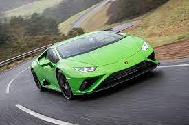

Automobiles Lamborghini S.p.A. is an Italian brand and manufacturer of luxury automobiles. Lamborghini's production facility and headquarters are located in Sant'Agata Bolognese, Italy. Italian manufacturing magnate Ferruccio Lamborghini founded the company in 1963 with the objective of producing a refined grand touring car to compete with offerings from established marques such as Ferrari. The company's first models were introduced in the mid-1960s and were noted for their refinement, power and comfort. Lamborghini gained wide acclaim in 1966 for the Miura sports coupé, which established rear mid-engine, rear wheel drive as the standard layout for high-performance cars of the era. Lamborghini grew rapidly during its first decade, but sales plunged in the wake of the 1973 worldwide financial downturn and the oil crisis. Ferruccio Lamborghini sold ownership of the company to Georges-Henri Rossetti and René Leimer and retired in 1974. The company went bankrupt in 1978, and was placed in the receivership of brothers Jean-Claude and Patrick Mimran in 1980, who purchased the company for US$3 million, renaming it Nuova Automobili Lamborghini SpA. As CEO and President, Patrick Mimran invested heavily in the company's expansion, and was later credited as being the man who saved Lamborghini. Under his management, Lamborghini's model line was expanded from the Countach to include the Jalpa entry-level sports car and the LM002 high performance off-road vehicle. Patrick Mimran sold Lamborghini to the Chrysler Corporation in 1987 for US$25 million. After replacing the Countach with the Diablo and discontinuing the Jalpa and the LM002, Chrysler sold Lamborghini to Malaysian investment group Mycom Setdco and Indonesian group V'Power Corporation in 1994. In 1998, Mycom Setdco and V'Power sold Lamborghini to the Volkswagen Group where it was placed under the control of the group's Audi division. New products and model lines were introduced to the brand's portfolio and this increased productivity for the brand.
